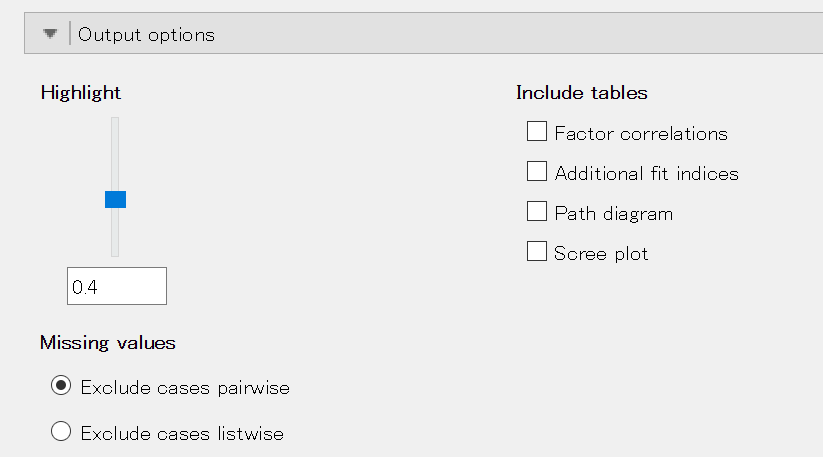

Next: 尺度の信頼性 Up: JASPについて Previous: 回帰分析
ここでは、Data Library にある練習用データを用いて因子分析を実行してみることにする。
[Open] メニューから [Data Library]
 [8. Network Analysis] と進むと、[BFI Network] というデータセットが見つかる。
[8. Network Analysis] と進むと、[BFI Network] というデータセットが見つかる。
右側のアイコンをダブルクリックして、.csv 形式のファイルを開いてみよう。
これは、パーソナリティに関する25項目の尺度（A1-O5）と性別、学歴、年齢からなるデータセット（2,800人分）である15。
質問項目は以下の通り。（私家訳版）
いずれも、「1=全くあてはまらない」から「6=とてもあてはまる」で得点化されている。 これらの項目に関して因子分析を適用することにしよう。
分析メニューから [Factor]
 [Exploratory Factor Analysis] と進むと、因子分析を実行する画面が現れる。
[Exploratory Factor Analysis] と進むと、因子分析を実行する画面が現れる。
左側のボックスから分析に用いる A1-O5 までの25項目を選択し、右側の [Included Variables] に移動してやると、自動的に因子分析が実行され結果が右側画面に表示される。
因子負荷と独自性 uniqueness（共通性）の値が [Component Loadings] として報告されている。 因子は RC1-RC6 と表示されており、自動的に因子数が6に設定されたことがわかる。
あとで述べるように、デフォルトでは一定の大きさ未満の因子負荷は "." として表示されるようになっている。 因子負荷行列を見る限り、どの因子にも大きな負荷を持たない項目（A4, A5, O4）があるほか、複数の因子に大きい負荷を持つ項目（O3）もあり、単純構造が満たされているとは言い難い。
変数を指定したボックスのすぐ下に、分析の詳細をコントロールするメニューが設けられている。
因子数を決定する方法を指定する。 以下の3つから選ぶことができる。
デフォルトでは、平行分析（parallel analysis）と呼ばれる方法によって自動的に因子数が決められる。 これは、分析対象となる項目数と同じ数の乱数を発生させて相関行列を算出し、データの相関行列から計算された固有値のうち乱数による相関行列から計算された相関行列よりも大きいものの数を因子数とするというものである[3]。
固有値の値にもとづく方法を採用するのであれば、[Eigenvalues] を選択し [Eigenvalues above] に続くボックスに基準となる値を入力すればよい。 通常は1を用いることが多く、これをカイザー基準と呼ぶ。
スクリープロットを利用するのであれば、あとで述べる方法で表示されたスクリープロットの形状から [Manual] の [Number of Factors] に続くボックスに因子数を入力すればよい。 理論や経験にもとづいて因子数を指定する場合も同様である。
因子の回転方法を指定する。
デフォルトでは、斜交回転のうち（プロマックス法 [promax]）が選択されている。 斜交回転であっても別の方法を採用したい場合は、プルダウンメニューから選択することができる。 なお、プロマックス法以外ではオブリミン法 [oblimin] もよく用いられる。
また、直交回転はデフォルトでは回転なし [none] が入っている。 この場合は、初期解（最尤法により算出）が返されることになる。 プルダウンメニューからバリマックス法 [varimax] などを選択することができる。
デフォルトでは、絶対値が0.4未満の因子負荷は値が表示されない。 また、斜交回転を行った場合でも因子間相関が表示されないし、スクリープロットも得られない。
これらの設定は、下部にある [Output options] を開くことで変更することができる。

値を表示する因子負荷の基準を設定する。 デフォルトでは0.4となっている。 値の大きさに関わらずすべての因子負荷の値を表示させたいのであれば、スライダーを一番下まで移動させるか下のボックスに0と入力すればよい。
因子負荷行列に加えて出力する情報を設定する。 デフォルトでは、どれにもチェックが入っていない。 因子間相関やスクリープロットなど、必要に応じてチェックを入れれば右側のボックスに結果が追加表示される。
このデータの場合、[Scree plot] にチェックを入れると次のようなスクリープロットが得られる。 黒丸で表されたのがデータとして得られた相関行列の固有値を示している。
データに欠測があった場合の処理方法を指定する。
データに欠測がある場合、1変数でも欠測のあるケースはすべて分析から除去してしまう（リストワイズ）か、相関行列を算出する際にペアとしてデータがない場合のみ除去する（ペアワイズ）か、いずれかを選択できるようになっている。 デフォルトはペアワイズになっている。
ここで、上で出力されたスクリープロットを見てみよう。 黒丸で表されたのがデータから得られた固有値であり、黒三角で表されたのが乱数から得られた固有値である。 平行分析ではこの黒三角より大きい黒丸の数を因子数とするのであるが、このプロットを見る限り第6固有値に関してはほとんど差がないようである。 また、第6固有値自体がほとんど1に近く、この場合は因子数5でもよいのではないかという気がしてくる。
そこで、因子数を5と指定して再分析してみることにしよう。 [Number of Factors] で [Manual] を選択し、ボックスに5と入力する。 その他の条件はデフォルトのまま維持するものとする。
すると、結果は次のようになる。 O4の因子負荷がいずれも0.4に届いていないが、それ以外はきれいな単純構造になっていることがわかる。 因子負荷がマイナスの項目は、逆転項目のはずである。 項目内容を確認してみよう。
[Highlight] を操作してすべての因子負荷を出力させ、項目O4がどのような状態になっているのか調べてみよう。
すると、項目O4は因子5に最大の負荷 .376 を持っているものの、因子1や因子2、因子3にも .20 に近い負荷を持っていることがわかる。 独自性も .749 と高く（つまり共通性が低く）、他の項目と一緒に因子分析にかけることか妥当か少し疑わしい。 （項目O4の文言も再度チェックしてみよう。他の項目と比べて異質な内容になっているだろうか。）
そこで、ここでは項目O4を削除した上で、再度因子数を5とした因子分析を適用することにする。 項目O4を選択して右側のボックスから左側のボックスに移動させるだけでよい。
うまくいくかと思いきや、今度は項目A4の因子負荷がいずれも0.4を下回るという結果になった。 このように、特定の項目を外すと、それ以外の項目の因子負荷にも影響が及ぶことになる。 1つ前の結果を見てみると、A4はもともと因子負荷がギリギリ0.4という項目だったことがわかる。
ここでさらにA4を省いて再分析するかどうかは分析者の裁量次第である。 今は、このままの結果を採用することとし、すべての因子負荷の値を表示させることにする。
得られた結果をコピーして編集したものが次の表である。
| 因子1 | 因子2 | 因子3 | 因子4 | 因子5 | 独自性 | |
| A1 | .119 | .151 | .078 | -.477 | .094 | .794 |
| A2 | .073 | .078 | .064 | .617 | -.025 | .545 |
| A3 | .056 | .210 | -.001 | .616 | -.012 | .469 |
| A4 | -.025 | .099 | .188 | .387 | .154 | .721 |
| A5 | -.067 | .336 | -.028 | .458 | .008 | .541 |
| C1 | .068 | -.023 | .562 | -.056 | -.122 | .674 |
| C2 | .162 | -.097 | .696 | .046 | -.039 | .548 |
| C3 | .032 | -.083 | .591 | .062 | .066 | .680 |
| C4 | .187 | .079 | -.616 | .014 | .079 | .551 |
| C5 | .234 | -.075 | -.544 | .031 | -.080 | .585 |
| E1 | -.000 | -.631 | .161 | .021 | .021 | .659 |
| E2 | .186 | -.716 | .049 | .057 | -.024 | .478 |
| E3 | .088 | .535 | -.048 | .147 | -.196 | .561 |
| E4 | -.049 | .710 | -.024 | .120 | .194 | .447 |
| E5 | .113 | .480 | .238 | -.047 | -.135 | .598 |
| N1 | .776 | .156 | .029 | -.217 | .076 | .357 |
| N2 | .757 | .098 | .038 | -.186 | .014 | .404 |
| N3 | .737 | -.025 | -.002 | .008 | -.008 | .451 |
| N4 | .563 | -.349 | -.092 | .120 | -.116 | .508 |
| N5 | .529 | -.150 | .037 | .157 | .144 | .651 |
| O1 | .061 | .169 | .048 | .015 | -.459 | .703 |
| O2 | .152 | .102 | -.053 | .059 | .503 | .717 |
| O3 | .092 | .238 | -.020 | .083 | -.557 | .548 |
| O5 | .057 | .099 | -.001 | -.052 | .568 | .686 |
同様に、因子間相関も出力して次のように加工した。
| 因子1 | 因子2 | 因子3 | 因子4 | |
| 因子2 | -.199 | |||
| 因子3 | -.248 | .457 | ||
| 因子4 | -.149 | .555 | .355 | |
| 因子5 | .131 | -.341 | -.315 | -.144 |
この結果から、因子1-因子5はどのように命名、解釈できるだろうか。 項目内容と照らし合わせながら各自考えてみてほしい。
因子分析は、このように様々な条件を試行錯誤で変えながら、解釈しやすい結果にたどり着くよう工夫を重ねるものである。 唯一絶対の正解があるわけではなく、多くの部分が分析者の裁量に委ねられることになる。 その分、なぜそのような選択をしたのか、説明する責任が分析者側にあるとも言える。
Taichi Okumura